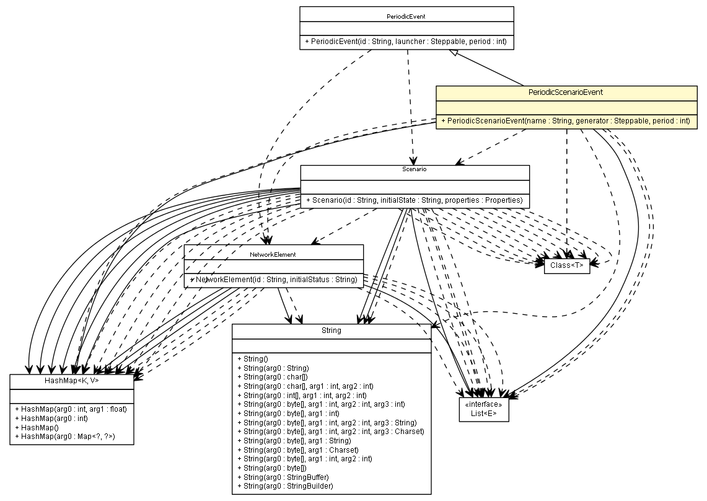

es.upm.dit.gsi.shanks.model.event.scenario
Class PeriodicScenarioEvent

java.lang.Object
 es.upm.dit.gsi.shanks.model.event.Event
es.upm.dit.gsi.shanks.model.event.PeriodicEvent
es.upm.dit.gsi.shanks.model.event.scenario.PeriodicScenarioEvent
es.upm.dit.gsi.shanks.model.event.Event
es.upm.dit.gsi.shanks.model.event.PeriodicEvent
es.upm.dit.gsi.shanks.model.event.scenario.PeriodicScenarioEvent
public abstract class PeriodicScenarioEvent
- extends PeriodicEvent
| Methods inherited from class java.lang.Object |
clone, equals, finalize, getClass, hashCode, notify, notifyAll, toString, wait, wait, wait |
PeriodicScenarioEvent
public PeriodicScenarioEvent(String name,
sim.engine.Steppable generator,
int period)
addPossibleAffected
public abstract void addPossibleAffected()
- Description copied from class:
Event
- Add classes using addPossibleAffectedElements method
- Specified by:
addPossibleAffected in class PeriodicEvent
changeProperties
public void changeProperties()
throws UnsupportedNetworkElementFieldException
- Specified by:
changeProperties in class PeriodicEvent
- Throws:
UnsupportedNetworkElementFieldException
changeStatus
public void changeStatus()
throws ShanksException
- Specified by:
changeStatus in class PeriodicEvent
- Throws:
ShanksException
interactWithNE
public abstract void interactWithNE()
- Specified by:
interactWithNE in class PeriodicEvent
addAffectedScenario
public void addAffectedScenario(Scenario s)
- Specified by:
addAffectedScenario in class PeriodicEvent
addAffectedElement
public void addAffectedElement(NetworkElement ne)
- Specified by:
addAffectedElement in class PeriodicEvent
getCurrentAffectedScenarios
public List<Scenario> getCurrentAffectedScenarios()
- Returns:
- the currentAffectedElements if the failure is active, null if not
removeAffectedElement
public void removeAffectedElement(Scenario scen)
- Remove this element, but not modify the status. When the failure will be
deactive, this removed element will keep the actual status
- Parameters:
element -
getPossibleAffectedScenarios
public HashMap<Class<? extends Scenario>,String> getPossibleAffectedScenarios()
- Returns:
- the possibleAffectedElements
addPossibleAffectedStatus
public void addPossibleAffectedStatus(Class<? extends Scenario> c,
String state)
removePossibleAffectedElements
public void removePossibleAffectedElements(Class<? extends NetworkElement> elementClass)
- Parameters:
elementClass -
getAffected
public List<?> getAffected()
- Specified by:
getAffected in class Event
Copyright © 2011-2013 Grupo de Sistemas Inteligentes - Universidad Politécnica de Madrid. All Rights Reserved.